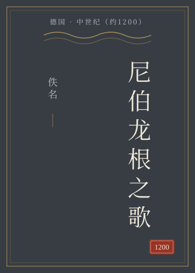
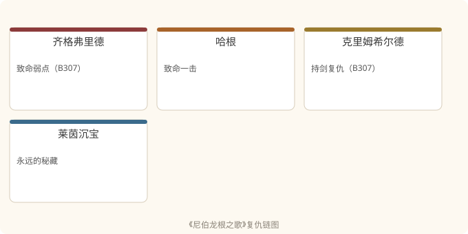

尼伯龙根之歌
一、基本信息
| 作者 | 佚名（'an unknown Austrian from the Danube region'——B307） |
|---|---|
| 成书/出版 | 约1200年（Britannica：written about 1200 by an unknown Austrian from the Danube region） Nibelungenlied — Encyclopaedia Britannica（百科全书） |
| 国别/地区 | 德国 |
| 时代 | 古代 · 中世纪（约1200） |
| 体裁 | 英雄史诗 |
| 语言 | 中古高地德语 |

《尼伯龙根之歌》复仇链图（主题·结构图）
二、创作背景
Britannica（B307）：'written about 1200 by an unknown Austrian from the Danube region'（约1200年由多瑙河流域的无名奥地利人写就）。
手稿（B307）：三份13世纪主要手稿——A(Munich)/B(St. Gall)/C(Donaueschingen)，'B as the most trustworthy'。
地位（B307）：'Probably no literary work has given more to Germanic arts than the Nibelungenlied'。
三、内容脉络
上卷：齐格弗里德娶克里姆希尔德——隐身斗篷助恭特赢比武（B307：Gunther goes through the motions of deeds actually performed by Siegfried in a cloak of invisibility）。
哈根识破弱点并' strikes the fatal blow'（B307）；'sinks the treasure in the Rhine'（莱茵沉宝——B307）。
下卷：克里姆希尔德'with Siegfrieds sword, she slays the bound and defenseless Hagen'（复仇——B307）。
四、主要人物表
| 人物 | 身份 | 说明 |
|---|---|---|
| 齐格弗里德 | 屠龙英雄 | （B307） |
| 克里姆希尔德 | 复仇者 | （B307） |
| 哈根 | 忠臣·杀手 | （B307） |
五、主题与艺术特点
- 复仇与荣誉的毁灭链（B307）。
- 尼伯龙根宝物：'sinks the treasure in the Rhine'（B307）。
- 437年勃艮第王国覆灭的历史内核（B307 语境：Hunnish overthrow……437 CE）。
六、影响与评论
- Britannica：'Probably no literary work has given more to Germanic arts than the Nibelungenlied'（B307）。
Nibelungenlied — Encyclopaedia Britannica（百科全书） - 瓦格纳《尼伯龙根的指环》受其启发（B307 语境：inspired works like Wagners Der Ring des Nibelungen）。
Nibelungenlied — Encyclopaedia Britannica（百科全书）
七、阅读建议
难点
- 中古高地德语与尼伯龙根人名。
- 39歌（Aventiure）结构。
- 《尼伯龙根之歌》（人民文学出版社，通说待核）。
- 中古高地德语原版（公有领域）。
日耳曼史诗首选（对照《贝奥武甫》）。
八、待核实
- 39歌（Aventiuren）核对。
- 哈根沉宝地点（莱茵河说）核对。
- 克里姆希尔德/布伦希尔特人名核对。